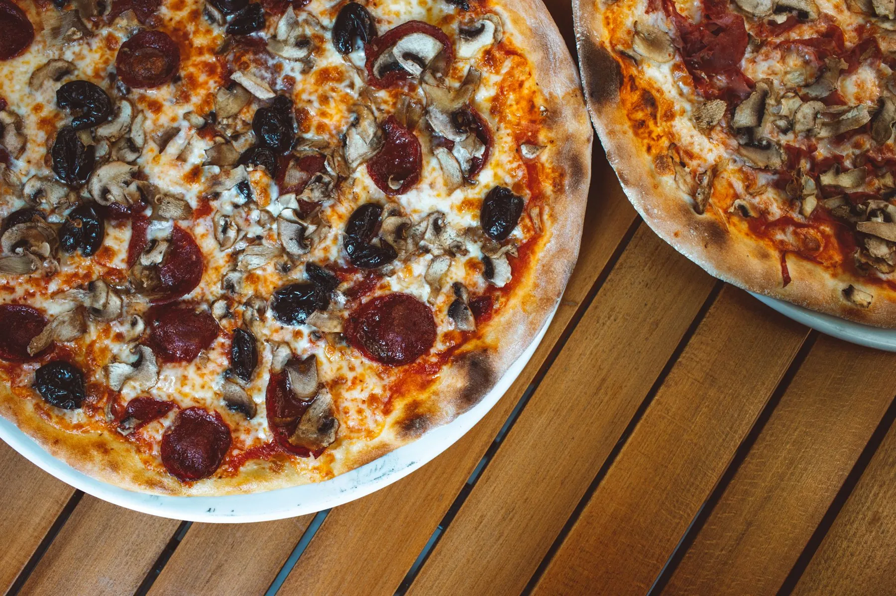

İtalyan pizzası · Denizli
Fotoğraf temsilîdir
Fırından kapınıza, sıcak sıcak.
Pizza, makarna, tava ve tatlı. Sinpaş ve Çamlık şubelerimizden gel al, telefonla sipariş ver ya da paket servisle iste.
Şubeler
Size en yakın Palermo.
Google'da "pizza" arayan biri şubeyi, telefonu ve yol tarifini tek dokunuşla bulur.
Paket servis
Evden çıkmadan da olur.
Paket servis uygulamasındaki sayfanız ve Instagram hesabınız burada, bir dokunuş uzakta.